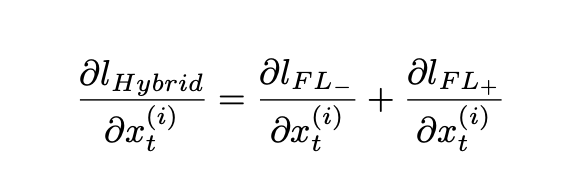

ABOUT
Hi! I'm Sky. I'm currently employed as a research engineer at KASIKORN Business-Technology Group (KBTG). I'm interested in projects that incorporate the theoretical and applied knowledge of brain processes and human social behavior in AI.
Interests. Machine Learning, Computer Vision, Speech Analytics, Lifelong Machine Learning
Interests. Machine Learning, Computer Vision, Speech Analytics, Lifelong Machine Learning
NEWS
| 22/04/2021 | Our TH patent Automatic Heat Detection of Cow in Video Footage has been issued. |
| 03/01/2021 | Our paper Visual Goal Human-Robot Communication Framework with Few-Shot Learning: a Case Study in Robot Waiter System has been accepted for publication in Industrial Informatics. |
| 31/08/2020 | Our paper Hybrid Loss for Improving Classification Performance with Unbalanced Data has been accepted for publication in ICONIP2020. |
| 15/07/2020 | I officially graduated from Faculty of Information Technology, KMITL. |
| 15/09/2019 | Our paper A New Approach to Automatic Heat Detection of Cattle in Video has been accepted for publication in ICONIP2019. |
| 01/07/2018 | I received a JASSO scholarship for short-term study in Japan. |
| 20/05/2018 | Our paper Fashion Finder: A System for Locating Online Stores on Instagram from Product Images has been accepted for publication in ICITEE2018. |
RESEARCH
Hybrid Loss for Improving Classification Performance with Unbalanced Data
International Conference on Neural Information Processing (ICONIP), 2020
[code]

A New Approach to Automatic Heat Detection of Cattle in Video
International Conference on Neural Information Processing (ICONIP), 2019

Fashion Finder: A System for Locating Online Stores on Instagram from Product Images
International Conference on Information Technology and Electrical Engineering (ICITEE), 2018
[video]


RESEARCH EXPERIENCE
NSTDA Co-Researcher
May 2020 - Sep 2020
Researched on applications of machine learning and computer vision in robotics under the supervision of Dr. Winai Chonnaparamutt.

Undergraduate Researcher
Jul 2017 - May 2020
During my pursuit of a bachelor's degree, I had the opportunity to work with Prof. Kitsuchart Pasupa. Real-world applications like automatic detection of heat in cattle and finding online stores based on an image of the product are examples of the works.

Research Intern
Summer 2019
Dr. Supasorn Suwajanakorn supervised me. I developed a framework based on deep learning to remove furniture from a room image. To complete the task, the framework uses an image inpainting technique. Additionally, I helped with Dr. Nat Dilokthanakul‘s work, which aims to build a framework for integrating computer vision and machine learning techniques to help robots communicate with humans.

Student Intern
Summer 2018
I was awarded a JASSO scholarship to study abroad for two months. In the summer of my sophomore year, I used the time to research on improvement of Saak transform using convex optimization on sparse representation under the supervision of Prof. Yoshimitsu Kuroki.